After completing this lesson, student will be able to
understand how molecules are formed and what is a chemical bond.
explain Octet rule.
draw Lewis dot structure of atoms.
understand different types of bonds.
differentiate the characteristics of ionic bond, covalent bond and coordinate bond.
understand redox reactions.
find out the oxidation number of different elements.
We already know that atoms are the building blocks of matter. Under normal conditions no atom exists as an independent Bracket OPEN single bracket closed entity in nature, except noble gases. However, a group of atoms is found to exist together as one species. Such a group of atoms is called molecule. Obviously there should be a force to keep the constituent atoms together as the thread holds the flowers together in a garland. This attractive force which holds the atoms together is called a bond.
Figure. 13.1 Flowers held together by thread image was given below
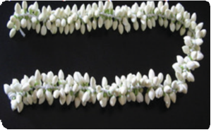
Figure. 13.2 Atoms held together by bond image was given below
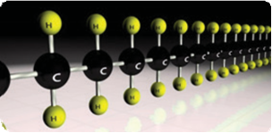
A chemical bond may be defined as the force of attraction between the atoms that binds them together as a unit called molecule. In this unit, we will study about Kossel Lewis approach to chemical bonds, Lewis dot structure and different types of reactions.
Atoms of various elements combine together in different ways to form chemical compounds. This phenomenon raised many questions.
Why do atoms combine question mark
How do atoms combine question mark
Why do certain atoms combine while others do not question mark
To answer such questions different theories have been put forth from time to time and one of such theories which explained the formation of molecules is Kossel-Lewis theory.
Kossel and Lewis gave successful explanation based upon the concept of electronic configuration of noble gases about why atoms combine to form molecules. Atoms of noble gases have little or no tendency to combine with each other or with atoms of other elements. This means that these atoms must be having stable electronic configurations. The electronic configurations of noble gases are given in Table 13.1.
Table 13.1 The electronic configurations of noble gases
Name of the element |
Atomic number |
Shell electronic configuration |
Helium Bracket OPEN He bracket closed |
2 |
2 |
Neon Bracket OPEN Ne bracket closed |
10 |
2,8 |
Argon Bracket OPEN Ar bracket closed |
18 |
2,8,8 |
Krypton Bracket OPEN Kr bracket closed |
36 |
2,8,18,8 |
Xenon Bracket OPEN Xe bracket closed |
54 |
2,8,18,18,8 |
Radon Bracket OPEN Rn bracket closed |
86 |
2,8,18,32,18,8 |
Except Helium, all other noble gases have eight electrons in their valence shell. Even helium has its valence shell completely filled and hence no more electrons can be added. Thus, by having stable valence shell electronic configuration, the noble gas atoms neither have any tendency to gain nor to lose electrons and hence their valency is zero. They are so inert that they even do not form diatomic molecules and exist as monoatomic gaseous atoms.
Box item OPEN
The number of electrons lost from a metal atom is the valency of the metal and the number of electrons gained by a non metal is the valency of the non-metal box item ends
Based on the noble gas electronic configuration, Kossel and Lewis proposed a theory in 1916 to explain chemical combination between atoms and this theory is known as ‘Electronic theory of valence’ or Octet rule. According to this, atoms of all elements, other than inert gases, combine to form molecules because they have incomplete valence shell and tend to attain a stable electronic configuration similar to noble gases. Atoms can combine either by transfer of valence electrons from one atom to another or by sharing of valence electrons in order to achieve the stable outer shell of eight electrons.
The tendency of atoms to have eight electrons in the valence shell is known as the ‘Octet rule’ or the Rule of eight’
For example, sodium with atomic number 11 will readily loose one electron to attain neon’s stable electronic configuration Bracket OPEN Figure 13.3bracket closed. Similarly, chlorine has electronic configuration 2,8,7. To get the nearest noble gas Bracket OPEN That is argon bracket closed configuration, it need one more electron. So, chlorine readily gains one electron from other atom and obtains stable electronic configuration Bracket OPEN Figure 13.4bracket closed. Thus elements tend to have stable valence shell Bracket OPEN eight electrons bracket closed either by losing or gaining electrons.
Figure. 13.3 Formation of sodium ion image was given below
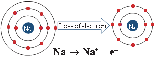
Image figure 5.4 formation of chloride ion was given below
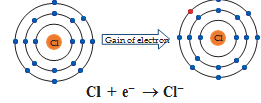
Which atoms tend to lose electrons question mark Which are tend to gain electrons question mark Atoms that have 1, 2, 3 electrons in their valence shell tend to lose electrons whereas atoms having 5, 6, 7 valence electrons tend to gain electrons.
Table 13.2 Unstable electronic configuration
Element |
Atomic number |
Electron distribution |
Valence electrons |
Boron |
5 |
2, 3 |
3 |
Nitrogen |
7 |
2, 5 |
5 |
Oxygen |
8 |
2,6 |
6 |
Sodium |
11 |
2, 8, 1 |
1 |
When atoms combine to form compounds, their valence electrons involve in bonding. Therefore, it is helpful to have a method to depict the valence electrons in the atoms. This can be done using Lewis dot symbol method. The Lewis dot structure or electron dot symbol for an atom consists of the symbol of the element surrounded by dots representing the electrons of the valence shell of the atom. The unpaired electron in the valence shell is represented by a single dot whereas the paired electrons are represented by a pair of dots.
Symbols other than dots, like crosses or circles may be used to differentiate the electrons of the different atoms in the molecule.
Table 13.3 Lewis dot structure
Element |
Atomic number |
Electron distribution |
Valence electrons |
Lewis dot structure |
Hydrogen |
1 |
1 |
1 |
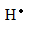 |
Helium |
2 |
2 |
2 |
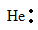 |
Beryllium |
4 |
2, 2 |
2 |
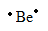 |
Carbon |
6 |
2, 4 |
4 |
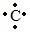 |
Nitrogen |
7 |
2, 5 |
5 |
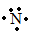 |
Oxygen |
8 |
2,6 |
6 |
Box item OPEN
Note that dots are placed one to each side of the letter symbol until all four sides are occupied. Then the dots are written two to a side until all valence electrons are accounted for. The exact placement of the single dots is immaterial. Box item ends
All the elements have different valence shell electronic configuration. So the way in which they combine to form compounds also differs. Hence, there are different types of chemical bonding possible between atoms which make the molecules. Depending on the type of bond, they show different characteristics or properties. Such types of bonding, that are considered to exist in molecules, are categorized as shown Figure 13.5. Among these, let us learn about the Ionic bond, Covalent bond and Coordinate bond in this chapter and other types of bond in the higher classes.
An ionic bond is a chemical bond formed by the electrostatic attraction between positive and negative ions. The bond is formed between two atoms when one or more electrons are transferred from the valence shell of one atom to the valence shell of the other atom. The atom that loses electrons will form a cation Bracket OPEN positive ion bracket closed and the atom that gains electrons will form an anion Bracket OPEN negative ion bracket closed. These oppositely charged ions come closer to each other due to electrostatic force of attraction and thus form an ionic bond. As the bond is between the ions, it is called Ionic bond and the attractive forces being electrostatic, the bond is also called Electrostatic bond. Since the valence concept has been explained in terms of electrons, it is also called as Electrovalent bond.
Let us consider two atoms A and B. Let atom A has one electron in excess and atom B has one electron lesser than the stable octet electronic configuration. If atom A transfer one electron to atom B, then both the atoms will acquire stable octet electronic configuration. As the result of this electron transfer, atom A will become positive ion Bracket OPEN cation bracket closed and atom B will become negative ion Bracket OPEN anion bracket closed. These oppositely charged ions are held together by electrostatic force of attraction which is called Ionic bond or Electrovalent bond.
In general, ionic bond is formed between a metal and non-metal. The compounds containing ionic bonds are called ionic compounds. Elements of Group 1 and 2 in periodic table, That is, alkali and alkaline earth metals form ionic compounds when they react with non-metals.
Box item open
The number of electrons that an atom of an element loses or gains to form an electrovalent bond is called its Electrovalency. Box item ends
The atomic number of Sodium is 11 and its electronic configuration is 2, 8, 1. It has one electron excess to the nearest stable electronic configuration of a noble gas - Neon. So sodium has a tendency to lose one electron from its outermost shell and acquire a stable electronic configuration forming sodium cation Bracket OPEN Na plus bracket closed.
The atomic number of chlorine is 17 and its electronic configuration is 2, 8, 7. It has one electron less to the nearest stable electronic configuration of a noble gas - Argon. So chlorine has a tendency to gain one electron to acquire a stable electronic configuration forming chloride anion Bracket OPEN Cl minus bracket closed.
Figure. 13.5 Classification of chemical bonding image was given below
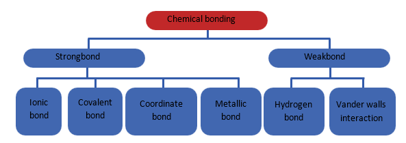
chemical bonding is classified as strong bond and weak bond. Strong bond is further classified as ionic bond, covalent bond, coordinate bond, metallic bond. Weak bond is classified as hydrogen bond and vander walls interaction.
Image was given below
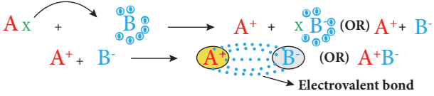
When an atom of sodium combines with an atom of chlorine, an electron is transferred from sodium atom to chlorine atom forming sodium chloride molecule thus both the atoms attain stable octet electronic configuration.
Figure. 13.6 Formation of ionic bond in sodium chloride image was given below
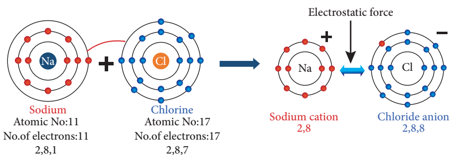
The atomic number of magnesium is 12 and the electronic configuration is 2, 8, 2. It has two electron excess to the nearest stable electronic configuration of a noble gas Neon. So magnesium has a tendency to lose two electrons from its outermost shell and acquire a stable electronic configuration forming magnesium cation Bracket OPENMg2 plus bracket closed.
As explained earlier two chlorine atoms will gain two electrons lost by the magnesium atom forming magnesium chloride molecule Bracket OPEN MgCl2 bracket closed as shown in Figure 13.7.
The nature of bonding between the atoms of a molecule is the primary factor that determines the properties of compounds. By this way, in ionic compounds the atoms are held together by a strong electrostatic force that makes the compounds to have its characteristic features as follows:
Physical state: These compounds are formed because of the strong electrostatic force between cations and anions which are arranged in a well-defined geometrical pattern. Thus ionic compounds are crystalline solids at room temperature.
Electrical conductivity: Ionic compounds are crystalline solids and so their ions are tightly held together. The ions, therefore, cannot move freely, and they do not conduct electricity in solid state. However, in molten state their aqueous solutions conduct electricity.
Melting point: The strong electrostatic force between the cations and anions hold the ions tightly together, so very high energy is required to separate them. Hence ionic compounds have high melting and boiling points.
Solubility: Ionic compounds are soluble in polar solvents like water. They are insoluble in non-polar solvents like benzene Bracket OPEN C6H6 bracket closed, carbon tetra chloride Bracket OPEN CCl4 bracket closed.
Density, hardness and brittleness: Ionic compounds have high density and they are quite hard because of the strong electrostatic force between the ions. But they are highly brittle.
Reactions: Ionic compounds undergo ionic reactions which are practically rapid and instantaneous
Figure. 13.7 Formation of ionic bond in magnesium chloride image was given below
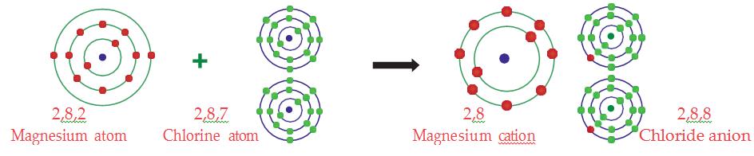
Atoms can combine with each other by sharing the unpaired electrons in their outermost shell. Each of the two combining atoms contributes one electron to the electron pair which is needed for the bond formation and has equal claim on the shared electron pair. According to Lewis concept, when two atoms form a covalent bond between them, each of the atoms attains the stable electronic configuration of the nearest noble gas. Since the covalent bond is formed because of the sharing of electrons which become common to both the atoms, it is also called as atomic bond.
Let us consider two atoms A and B. Let atom A has one valence electron and atom B has seven valence electrons. As these atoms approach nearer to each other, each atom contributes one electron and the resulting electron pair fills the outer shell of both the atoms. Thus both the atoms acquire a completely filled valence shell electronic configuration which leads to stability.
Figure. 13.8 Schematic representation of covalent bond image was given below
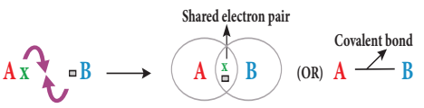
Box item open
Covalent bonds are of three types:
2. Double covalent bond represented by a double line Bracket OPEN parallel horizontal line bracket closed between the two atoms. Example O double bond O
3. Triple covalent bond represented by a triple line Bracket OPEN 3 horizontal parallel lines bracket closed between the two atoms. Example N triple bond N box item ends
Hydrogen molecule is formed by two hydrogen atoms. While forming the molecule, both hydrogen atoms contribute one electron each to the shared pair and both atoms acquire stable and completely filled electronic configuration Bracket OPEN resemble H e bracket closed.
Figure. 13.9 Formation of covalent bond in H2 molecule image was given below
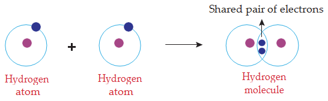
Chlorine molecule is formed by two chlorine atoms. Each chlorine atom has seven valence electrons Bracket OPEN 2,8,7bracket closed. These two atoms achieve a stable completely filled electronic configuration Bracket OPEN octet bracket closed by sharing a pair of electrons.
Figure. 13.10 Formation of covalent bond in Cl2 molecule was given below
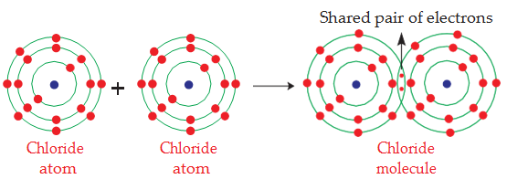
Mee thane molecule is formed by the combination of one carbon and four hydrogen atoms. The carbon atom has four valence electrons Bracket OPEN 2, 4 bracket closed. These four electrons are shared with four atoms of hydrogen to achieve a stable electronic configuration Bracket OPEN octet bracket closed by sharing a pair of electrons.
Figure. 13.11 Formation of covalent bond in mee thane molecule image was given below
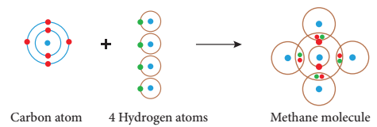
Oxygen molecule is formed by two oxygen atoms. Each oxygen atom has six valence electrons Bracket OPEN 2, 6 bracket closed. These two atoms achieve a stable electronic configuration Bracket OPEN octet bracket closed by sharing two pair of electrons. Hence a double bond is formed in between the two atoms.
Figure. 13.12 Formation of covalent bond in oxygen molecule image was given below
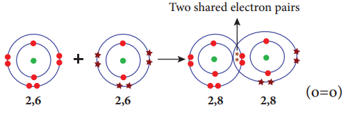
Nitrogen molecule is formed by two nitrogen atoms. Each nitrogen atom has five valence electrons Bracket OPEN 2, 5bracket closed. These two atoms achieve a stable completely filled electronic configuration Bracket OPEN octet bracket closed by sharing three pair of electrons. Hence a triple bond is formed in between the two atoms.
Figure. 13.13 Formation of covalent bond in nitrogen molecule image was given below
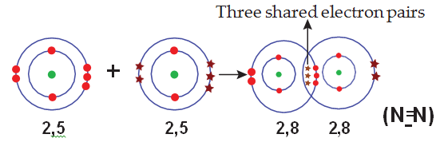
As said earlier, the properties of compounds depend on the nature of bonding between their constituent atoms. So the compounds containing covalent bonds possess different characteristics when compared to ionic compounds.
Physical state: Depending on force of attraction between covalent molecule the bond may be weaker or stronger. Thus covalent compounds exists in gaseous, liquid and solid form. Example Oxygen-gas; Water-liquid: Diamond-solid.
Electrical conductivity: Covalent compounds do not contain charged particles Bracket OPEN ions bracket closed, so they are bad conductors of electricity.
Melting point: Except few covalent compounds Bracket OPEN Diamond, Silicon carbide bracket closed, they have relatively low melting points compared to ionic compounds.
Solubility: Covalent compounds are readily soluble in non-polar solvents like benzene Bracket OPEN C6H6 bracket closed, carbon tetra chloride Bracket OPEN CCl4 bracket closed. They are insoluble in polar solvents like water.
Hardness and brittleness: Covalent compounds are neither hard nor brittle. But they are soft and waxy.
Reactions: Covalent compounds undergo molecular reactions in solutions and these reactions are slow.
Box item open
Polar solvents contain bonds between atoms with very different electro negativities, such as oxygen and hydrogen. Ionic compounds are soluble in polar solvents. Ex: water, ethanol, acetic acid, ammonia.
Non polar solvents contain bonds between atoms with similar electro negativities, such as carbon and hydrogen. Covalent compounds are soluble in nonpolar solvents. Ex: acetone, benzene, toluene, turpentine box item ends
As we know, a metal combines with a non metal through ionic bond. The compounds so formed are called ionic compounds. A compound is said to be ionic when the charge of the cation and anion are completely separated. But in 1923, Kazimierz Fajans found, through his X-Ray crystallographic studies, that some of the ionic compounds show covalent character. Based on this, he formulated a set of rules to predict whether a chemical bond is ionic or covalent. Fajan’s rules are formulated by considering the charge of the cation and the relative size of the cation and anion.
When the size of the cation is small and that of anion is large, the bond is of more covalent character
Greater the charge of the cation, greater will be the covalent character a table was given below
Ionic |
Covalent |
Low positive charge |
High positive charge |
Large cation |
Small cation |
Small anion |
Large anion |
For example, in sodium chloride, low positive charge Bracket OPEN plus 1bracket closed, a fairly large cation and relatively small anion make the charges to separate completely. So it is ionic. In aluminium triiodide, higher is the positive charge Bracket OPEN plus 3bracket closed, larger is the anion and thus no complete charge separation. So is covalent. The following picture depicts the relative charge separation of ionic compounds.
Figure. 13.14 Relatice charge separation of ionic compounds image was given below
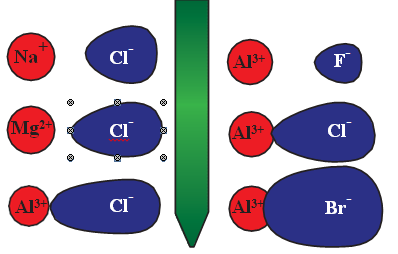
In the formation of normal covalent bond each of the two bonded atoms contribute one electron to form the bond. However, in some compounds, the formation of a covalent bond between two atoms takes place by the sharing of two electrons, both of which comes from only one of the combining atoms. This bond is called Coordinate covalent bond or Dative bond.
Mostly the lone pair of electrons from an atom in a molecule may be involved in the dative bonding. The atom which provides the electron pair is called donor atom while the other atom which accepts the electron pair is called acceptor atom. The coordinate covalent bond is represented by an arrow Bracket OPEN→bracket closed which points from the donor to the acceptor atom.
Let us consider two atoms A and B. Let atom A has an unshared lone pair of electrons and atom B is in short of two electrons than the octet in its valence shell. Now atom A donates its lone pair while atom B accepts it. Thus the lone pair of electrons originally belonged to atom A are now shared by both the atoms and the bond formed by this mutual sharing is called Coordinate covalent bond. Bracket OPEN A to Bbracket closed.
image was given below
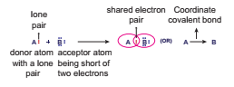
Examples Bracket OPEN NH4 plus ,NH3 to BF3 bracket closed
In some cases, the donated pair of electrons comes from a molecule as a whole which is already formed to another acceptor molecule. Here the molecule ammonia Bracket OPEN NH3 bracket closed gives a lone pair of electrons to Boron tri fluoride Bracket OPEN BF3 bracket closed molecule which is electron deficient. Thus, a coordinate covalent bond is formed between NH3 Bracket OPEN donor molecule bracket closed and BF3 Bracket OPEN acceptor molecule bracket closed and is represented by NH3 to BF3.
Image Coordination bond between NH3 and BF3 was given below
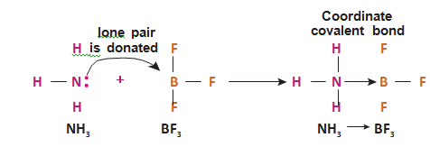
Characteristics of coordinate covalent compounds
The compounds containing coordinate covalent bonds are called coordinate compounds.
Physical state: These compounds exist as gases, liquids or solids.
Electrical conductivity: Like covalent compounds, coordinate compounds also do not contain charged particles Bracket OPEN ions bracket closed, so they are bad conductors of electricity.
Melting point: These compounds have melting and boiling points higher than those of purely covalent compounds but lower than those of purely ionic compounds.
Solubility: Insoluble in polar solvents like water but are soluble in non-polar solvents like benzene, CCl4 , and toluene.
Reactions: Coordinate covalent compounds undergo molecular reactions which are slow.
When an apple is cut and left for sometimes, its surface turns brown. Similarly, iron bolts and nuts in metallic structures get rusted. Do you know why these are happening question mark It is because of a reaction called oxidation.
Image was given below
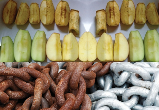
Oxidation: The chemical reaction which involves addition of oxygen or removal of hydrogen or loss of electrons is called oxidation.
2 Mg plus O2 gives 2 MgO Bracket OPEN addition of oxygen bracket closed
CaH2 gives Ca plus H2 Bracket OPEN removal of hydrogen bracket closed
F e2 plus turns F e3 plus plus e negative Bracket OPEN loss of electron bracket closed
Reduction: The chemical reaction which involves addition of hydrogen or removal of oxygen or gain of electrons is called reduction.
2 Na plus H2 gives 2 Na H Bracket OPEN addition of hydrogen bracket closed
Cu O plus H2 gives Cu plus H2O Bracket OPEN removal of oxygen bracket closed
Fe3 plus plus e minus gives Fe2 plus Bracket OPEN gain of electron bracket closed
Redox reactions: Generally, the oxidation and reduction occurs in the same reaction Bracket OPEN simultaneously bracket closed. If one reactant gets oxidised, the other gets reduced. Such reactions are called oxidation-reduction reactions or Redox reactions.
2 PbO plus C gives 2 Pb plus C O2
Zn plus CuSO4 gives Cu plus ZnSO4
Table was given below
Oxidation
|
Addition of oxygen |
Removal of hydrogen |
|
Loss of electron |
|
Reduction |
Removal of oxygen |
Addition of hydrogen |
|
Gain of electron |
Substances which have the ability to oxidise other substances are called oxidising agents These are also called as electron acceptors because they remove electrons from other substances. Example: H2O2 , MnO4 minus , C r O with subscript 3 , C r 2 O with subscript 7and 2 minus
Substances which have the ability to reduce other substances are called Reducing agents. These are also called as electron donors because they donate electrons to other substances.
Example: NaBH4 , L I AlH4 and metals like Palladium, Platinum.
In nature, the oxygen present in atmospheric air oxidises many things, starting from metals to living tissues.
The shining surface of metals tarnishes due to the formation of respective metal oxides on their surfaces. This is called corrosion.
The freshly cut surfaces of vegetables and fruits turn brown after some time because of the oxidation of compounds present in them.
The oxidation reaction in food materials that were left open for a long period is responsible for spoiling of food. This is called Rancidity.
Oxidation number of an element is defined as the total number of electrons that an atom either gains or loses in order to form a chemical bond with another atom. Oxidation number is also called oxidation state. If the oxidation number is positive then it means that the atom loses electron, and if it is negative it means that the atom gains electrons. If it is zero then the atom neither gains nor loses electrons. The sum of oxidation numbers of all the atoms in the formula for a neutral compound is ZERO. The sum of oxidation numbers of an ion is the same as the charge on that ion. Negative oxidation number in a compound of two unlike atoms is assigned to the more electronegative atom.
Box item open
Electronegativity is the tendency of an atom in a molecule to attract towards itself the shared pair of electrons. box item ends
Oxidation number of K and B r in KBr molecule is plus 1 and minus 1 respectively.
Oxidation number of N in NH3 molecule is minus 3.
Oxidation number of H is plus 1 Bracket OPEN except hydrides bracket closed.
Oxidation number of oxygen in most cases is minus 2.
Problems on determination of Oxidation Number
O N Bracket OPEN Oxidation Number bracket closed of neutral molecule is always zero
Oxidation Number of H and O in H2 O
Let us take O N of H = plus 1 and O N of O = minus 2
2 into Bracket OPEN plus 1 bracket closed plus 1 into Bracket OPEN minus 2 bracket closed = 0
Bracket OPEN plus 2 bracket closed plus Bracket OPEN minus 2 bracket closed = 0
Thus, O N of H is plus 1 and O N of O is minus 2
Illustration 2
Oxidation Number of S in H2 S O 4
Let O N of S be x and we know O N of H = plus 1 and O = minus 2
2 into Bracket OPEN plus 1bracket closed plus x plus 4 into Bracket OPEN minus 2bracket closed = 0
Bracket OPEN plus 2 bracket closed plus x plus Bracket OPEN minus 8 bracket closed = 0
x = plus 6
Therefore, O N of S is plus 6
Illustration 3
Oxidation Number of Cr in K2 Cr2 O7
Let O N of Cr be x and we know O N of K = plus 1 and O = –2
2 into Bracket OPEN plus 1 bracket closed plus 2 into x plus 7 into Bracket OPEN minus 2 bracket closed = 0
Bracket OPEN plus 2 bracket closed plus 2 x plus Bracket OPEN minus 14 bracket closed = 0
2 x = plus 12
x = plus 6 Therefore, O N of C r in K2 C r2 O7 is plus 6
Oxidation Number of F e in F e SO4
Let O N of Fe be x and we know O N of S = plus 6 and O = minus 2
x plus 1 into Bracket OPEN plus 6 bracket closed plus 4 into Bracket OPEN minus 2bracket closed = 0
x plus Bracket OPEN plus 6 bracket closed plus Bracket OPEN minus 8bracket closed = 0
x = plus 2 Therefore, O N of Fe in Fe SO4 is plus 2
1. Find the oxidation number of Mn in KMnO4
2. Find the oxidation number of Cr in Na2 Cr2 O7
3. Find the oxidation number of C u in CuSO4
4. Find the oxidation number of F e in F e O
The tendency of atoms to have eight electrons in the valence shell is known as the ‘Octet rule’ or the ‘Rule of eight’
The Lewis dot structure or electron dot symbol for an atom consists of the symbol of the element surrounded by dots representing the electrons of the valence shell of the atom.
There are different types of chemical bonding possible between atoms which make the molecules. Depending on the type of bond they show different characteristics or properties.
An ionic bond is formed by the electrostatic attraction between positive and negative ions. It is also called as Electrochemical bond.
The covalent bond is formed because of the sharing of electrons which become common to both the atoms. It is also called as Atomic bond.
In some compounds the formation of a covalent bond between two atoms takes place by the sharing of two electrons, both of which comes from only one of the combining atoms. This bond is called Coordinate covalent bond or Dative bond.
Substances which have the ability to oxidise other substances are called Oxidising agents. These are also called as electron acceptors because they remove electrons form other substances.
Substances which have the ability to reduce other substances are called Reducing agents. These are also called as electron donors because they donate electrons to other substances.
Oxidation number also called Oxidation State
Chemical bond |
Force of attraction between the two atoms that binds them together as a unit. |
Coordinate covalent bond |
Bond formed between atoms by mutual sharing of electrons which are supplied by one atom. |
Covalent bond |
Bond formed between atoms by the mutual sharing of electrons. |
Ionic / Electrovalent bond |
Bond formed between cation and anion because of the transfer of electrons from one atom to other atom. |
Octet rule or Rule of eight |
The tendency of atoms to have eight electrons in the valence shell. |
Oxidation |
Chemical reaction which involves in the addition of oxygen or removal of hydrogen or loss of electrons. |
Oxidation number |
The formal charge which an atom has when electrons are counted. |
Oxidising agents |
Substances which have the ability to oxidise other substances. |
Redox reaction |
Oxidation and reduction occurs in the same reaction simultaneously. |
Reducing agents |
Substances which have the ability to reduce other substances. |
Reduction |
Chemical reaction which involves in the addition of hydrogen or removal of oxygen or gain of electrons. |